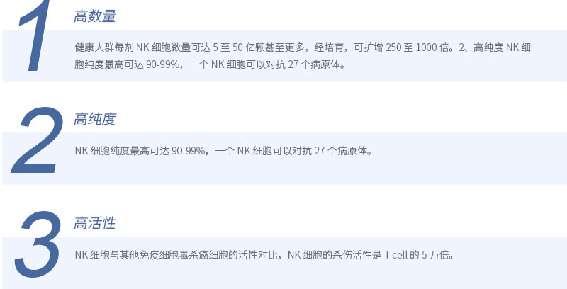
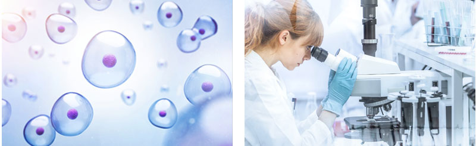
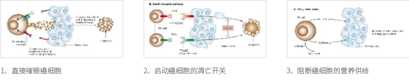

完整疗愈健康管理中心
通过生物电，生物共振，能量学，心理等方法，综合对客人进行细胞层面的保养，尤其是线粒体ATP层面上的保养。
细胞治疗将是本世纪最重要的医学领域。 —— 罗伯霍维兹（H.Robert Horvitz，2002年诺贝尔医学奖得主）
卫未生物国际防癌抗衰中心引入美国自然杀伤细胞（Natural Killer Cell，以下简称 NK 细胞）技术，针对机体癌症、感染及衰老有极其明显的效果。
NK 细胞是机体重要的免疫细胞，来源于人体自身骨髓，其杀伤活性无 MHC（人体主要组织相容性复合体）限制，不依赖抗体，其靶细胞主要有肿瘤细胞（包括细胞系）、病毒感染细胞、人体自身组织细胞（如血细胞）、寄生虫等，因此
NK 细胞是机体抗癌、抗感染、抗衰老的重要免疫因素。
相较于目前市场上的细胞疗法， NK 细胞技术有着如下几大优势：
 NK 细胞在人体内游走一周，只需要 6 分钟。一天 24 小时，NK 细胞可以循环 240 圈。NK细胞一旦发现癌细胞、细菌、病毒的踪迹， 即可 5 分内将癌细胞、细菌、病毒歼灭，高效密集地保卫我们的身体不受侵害。
NK 细胞对抗癌细胞主要有以下三种途径：

1、分子阶段老化，此时机体细胞内氧化增加；
2、细胞阶段老化，此时老化细胞处理能力下降，以上两种老化在机体表面并无突出表征；
3、组织阶段老化，此时内脏血流功能低下，此时机体会出现筋肉萎缩、动脉硬化、肺活量降低、骨质疏松、免疫功能降低等表现；
4、个体阶段老花，此时机体已无法维持高品质，机体会出现反射机能低下、体温调节机能低下、基础代谢调节能力低下、废物排 泄能力低下、荷尔蒙分泌低下等等问题；
5、免疫细胞群老化，此时机体的整体回复能力全面降低，个体生命体征每况愈下。
NK 细胞通过个体不同的老化阶段制定出个性化 NK 细胞疗程，能够有效的延缓机体的整体老化过程，达到活化免疫、促进组织新陈代谢、改善皮肤组织代谢、促进血液循环、去除活性氧化等作用，极大改善机体因老化而出现的各类问题，从根源上达到延缓衰老，长葆青春的功效。